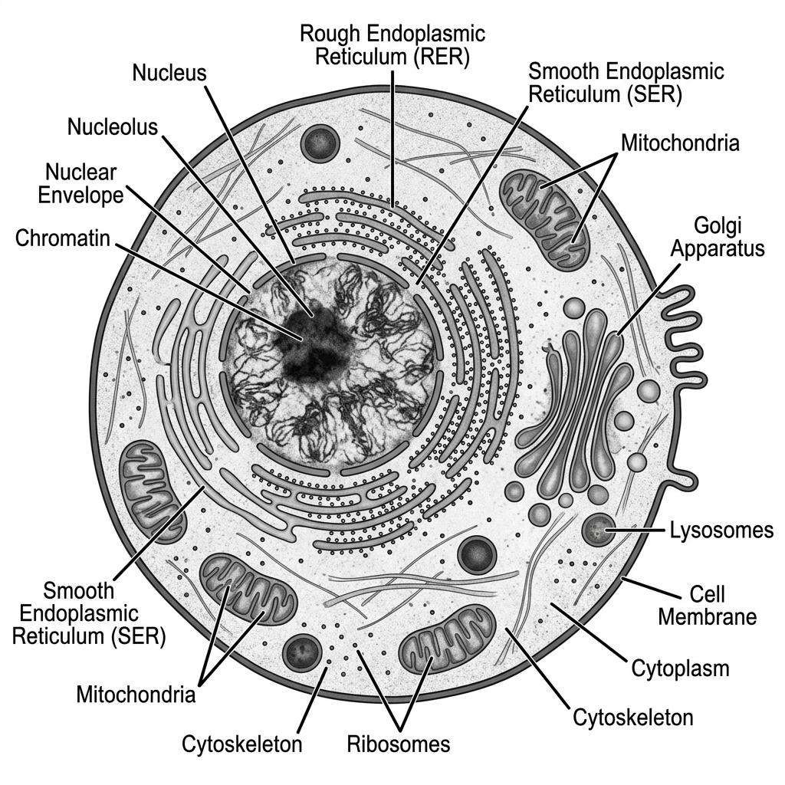
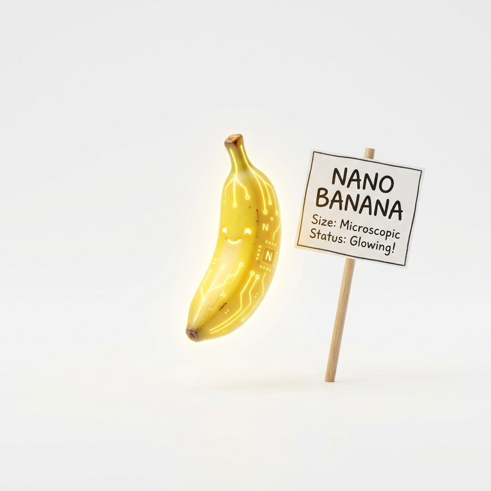
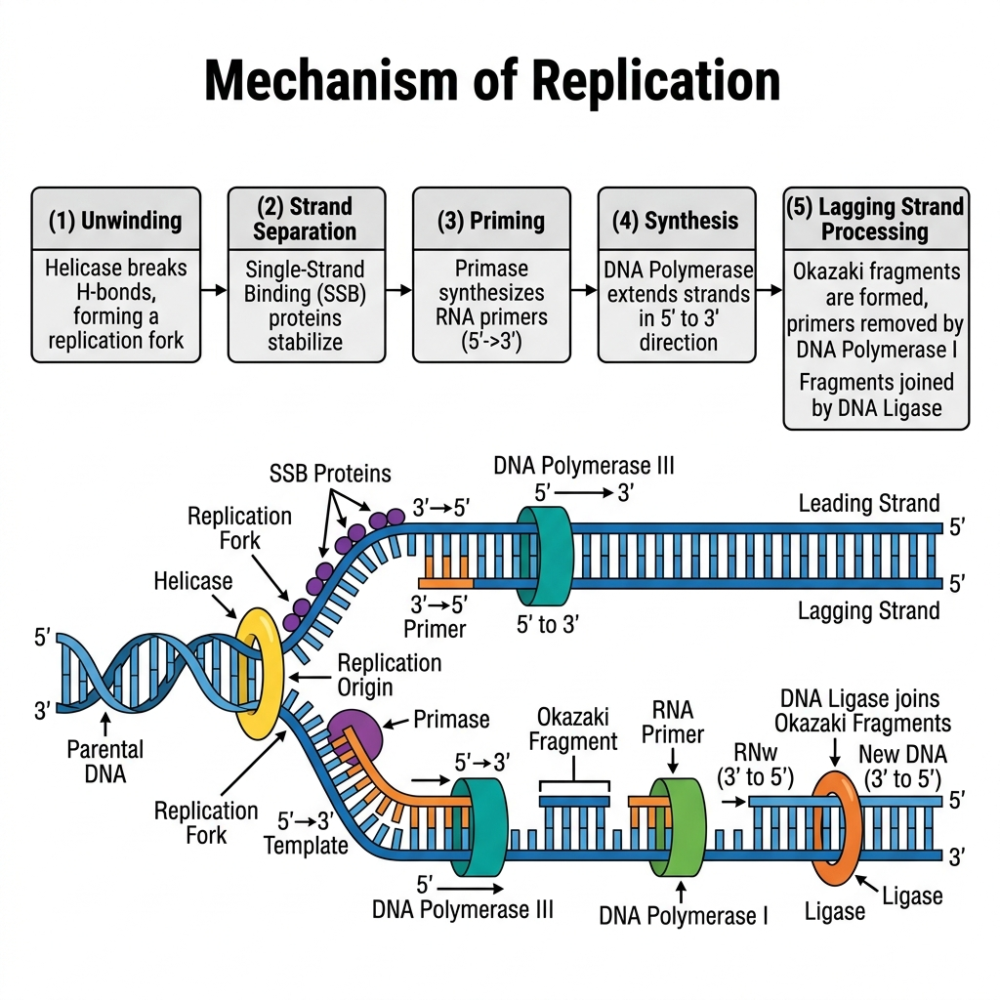

Biology Suggestions
Complete Q&A Bank for Final Revision
Group B — 5 Mark Questions
2. Explain the fundamental differences between science and engineering. [5 Marks]
Science is the systematic study of the natural world through observation, hypothesis formation, and
experimentation, aiming to discover and explain how nature works (e.g. discovering the laws of motion or
the structure of DNA).
Engineering is the application of scientific and mathematical principles to design, build, and optimize
practical solutions, devices, or systems that solve real-world problems (e.g. designing a bridge or a
biosensor).
Key distinctions: Science asks "why/how does this happen?" while Engineering asks "how can I build
something useful using this knowledge?" Science is largely descriptive and analytical, while engineering is
synthetic and design-oriented, working under constraints of cost, safety, and feasibility. Science seeks
universal truths; engineering seeks optimal, practical solutions.
3. Draw a comparison between eye and camera. [5 Marks]
Both the human eye and a camera are optical instruments designed to capture light and form an image. Their functions map closely to one another:
| Function | Human Eye | Camera |
|---|---|---|
| Light Entry | Cornea: The clear front surface that acts as the initial protective window. | Lens Cover/Front Glass: Protects the internal camera lens. |
| Controlling Light Amount | Iris & Pupil: The iris expands/contracts to change the pupil size, regulating light hitting the retina. | Diaphragm & Aperture: The diaphragm adjusts the aperture size to control light hitting the sensor. |
| Focusing | Crystalline Lens: Changes shape (accommodation) via ciliary muscles to focus objects. | Glass Lens System: Moves physically back and forth to focus on objects. |
| Image Capture (Sensor) | Retina: Light-sensitive tissue containing rods and cones that captures the inverted image. | Photographic Film / Digital Sensor: Captures the inverted image. |
| Preventing Internal Reflection | Choroid: Black pigmented layer inside the eye absorbing scattered light. | Black interior paint: Absorbs scattered light inside the camera body. |
4. Compare bird flight with aircraft flight, highlighting the biological principles engineers have borrowed. [5 Marks]
Bird flight has been a foundational inspiration for aircraft engineering. Both rely on the same physical
principles of lift, thrust, drag, and weight, but achieve them differently.
Wings and lift: Birds have cambered (curved) wings that generate lift through differential airflow speed
over and under the wing — the same aerofoil principle used in aircraft wing design.
Wingtip design: Birds like eagles spread their primary wingtip feathers upward to reduce wingtip vortices
and induced drag; this directly inspired modern aircraft winglets, which reduce drag and improve fuel
efficiency.
Flapping vs. fixed wings: Birds generate both lift and thrust by flapping, while aircraft separate these
functions - fixed wings provide lift and engines provide thrust - because mechanically replicating
flapping flight at large scale is inefficient.
Lightweight structure: Bird bones are hollow and reinforced with internal struts, minimizing weight while
retaining strength — a principle borrowed in aircraft structural design (honeycomb and truss structures).
Streamlining: The tapered, smooth body shape of birds reduces drag, mirrored in fuselage design.
Overall, aircraft engineering translates the aerodynamic principles perfected by birds through millions of
years of evolution into mechanical, scalable systems.
5. Discuss how Robert Brown's observation of Brownian motion led to the origin of thermodynamics. [5 Marks]
In 1827, botanist Robert Brown observed that pollen grains suspended in water exhibited continuous,
random, jittery motion under the microscope, even though the grains themselves were non-living. This
phenomenon, called Brownian motion, could not be explained by botany alone.
Decades later, Albert Einstein (1905) mathematically explained Brownian motion as the visible result of
countless collisions between the suspended particle and the invisible, fast-moving molecules of the
surrounding fluid, driven by their thermal (kinetic) energy. This provided direct physical evidence for the
existence of atoms/molecules and for the kinetic theory of matter.
This connection was pivotal for thermodynamics: it showed that heat and temperature are macroscopic
manifestations of the random kinetic motion of countless microscopic particles. It bridged statistical
mechanics with observable thermodynamic behaviour, reinforcing the molecular/kinetic theory of gases
and matter, and confirming that thermodynamic quantities like temperature are statistical averages of
molecular motion - a cornerstone assumption of modern thermodynamics and statistical physics.
6. 15 Marks] Explain the significance of Julius Mayer's observations in establishing the laws of thermodynamics. [5 Marks]
Julius Robert Mayer, a German physician, made a key observation while working as a ship's doctor in the
tropics: the venous blood of sailors in hot climates was brighter red (more oxygenated) than expected,
suggesting the body needed to "burn" less fuel (oxidize less food) to maintain body temperature in a hot
environment than in a cold one.
This clinical/physiological observation led Mayer to a profound generalization: that heat and mechanical
work (and by extension, all forms of energy in the body and in physical systems) are interconvertible and
that the total energy in an isolated system is conserved - it can change form (chemical energy in food,
into heat, into mechanical work) but is never created or destroyed.
Significance: Mayer is credited as one of the founders of the First Law of Thermodynamics
(conservation of energy). His work demonstrated that biological/physiological processes obey the same
fundamental physical laws as mechanical and thermal systems — establishing an essential link between
biology and physics, and showing that principles discovered by studying a living system (the human body)
could generalize into a universal law of nature.
8. Draw labeled diagram of Animal cell as seen in Electron microscope. Comment on characteristics of Animal cell. [5 Marks]
Characteristics of an Animal Cell:
- Eukaryotic: It possesses a true, membrane-bound nucleus housing linear DNA.
- No Cell Wall: Unlike plant cells, animal cells lack a rigid cell wall, giving them a flexible, irregular, or spherical shape. They are enclosed only by a selectively permeable plasma membrane.
- No Chloroplasts: They cannot perform photosynthesis and are heterotrophic.
- Small/No Vacuoles: If present, vacuoles are small and numerous, used for temporary storage or transport, unlike the large central vacuole of a plant cell.
- Presence of Centrosomes/Centrioles: Unique to animal cells, these structures organize microtubules and are vital during cell division (mitosis/meiosis).
- Lysosomes: Abundant in animal cells, acting as the digestive system of the cell by containing hydrolytic enzymes.
Labeled Diagram Representation:

9. 15 Marks] Draw a labeled diagram of a plant cell and highlight the structures that distinguish it from an animal cell. [5 Marks]
Structures unique to (or greatly emphasized in) plant cells, distinguishing them from animal cells:
- • Cell wall: A rigid outer layer made of cellulose, lying outside the plasma membrane, providing structural
support and shape — absent in animal cells.
- • Chloroplasts: Double-membraned organelles containing chlorophyll, the site of photosynthesis,
converting light energy into chemical energy - entirely absent in animal cells.
- • Large central vacuole: Occupies up to 90% of cell volume, maintaining turgor pressure, storing
water/nutrients/waste - animal cells have only small, scattered vacuoles, if any.
- • Plasmodesmata: Cytoplasmic channels through cell walls connecting adjacent plant cells, allowing
direct communication and transport — no equivalent structure in animal cells.
- • Absence of centrioles: Most plant cells lack centrioles (unlike animal cells), and instead organize
spindle fibres via other microtubule organizing centres.
- • Fixed, regular shape: Due to the rigid cell wall, plant cells are typically rectangular/ polygonal rather
than the rounded, irregular shape of animal cells.
These differences reflect the plant cell's dual role of self-sustenance (photosynthesis) and structural rigidity
(immobility), versus the animal cell's need for flexibility and mobility.
Plant Cell - Schematic (distinguishing features boxed)
Cell Wall (cellulose)
Plasma Membrane
Nucleus
Chloroplast
Chloroplast
Large Central
Vacuole
Mitochondrion
Chloroplast
Plant cell schematic, with distinguishing structures highlighted

10. Differentiate between prokaryotic and eukaryotic cell. [5 Marks]
| Feature | Prokaryotic Cell | Eukaryotic Cell |
|---|---|---|
| Nucleus | No true nucleus. DNA is freely floating in a region called the nucleoid. | True nucleus present, enclosed by a nuclear membrane. |
| Organelles | Lacks membrane-bound organelles (no mitochondria, ER, or Golgi). | Contains membrane-bound organelles (mitochondria, chloroplasts, ER). |
| Size | Generally small (0.1 - 5.0 μm). | Generally larger (10 - 100 μm). |
| DNA Structure | Single circular chromosome. | Multiple linear chromosomes. |
| Examples | Bacteria and Archaea. | Animals, Plants, Fungi, Protists. |
12. What is crossing over? Explain its significance in generating genetic variation. [5 Marks]
Crossing over is the reciprocal exchange of genetic material (segments of DNA) between non-sister
chromatids of homologous chromosomes, occurring during Prophase I of meiosis (at the pachytene
stage), mediated by structures called chiasmata.
Significance: Crossing over breaks up existing combinations of alleles inherited from each parent and
creates new combinations of alleles on the same chromosome - this is the primary source of
recombinant genotypes. Along with independent assortment, it ensures that gametes produced are
genetically unique, increasing genetic diversity within a population. This diversity is crucial for evolution
and natural selection, as it provides the raw variation upon which selection can act, and it underlies the
basis
of genetic mapping (recombination frequency is used to determine relative gene positions on a
chromosome).
MODULE 2
Classification of Living Organisms
Unit 2 | 10 Questions
15. Classify organisms based on cellularity (unicellular vs multicellular) and ultrastructure (prokaryote vs eukaryote). [5 Marks]
Based on cellularity:
- • Unicellular organisms: Composed of a single cell that performs all life functions (nutrition, respiration,
reproduction, excretion) independently. Examples: bacteria, Amoeba, yeast.
- • Multicellular organisms: Composed of many cells that are specialized and organized into tissues and
organs, with division of labour among cell types. Examples: plants, animals, most fungi.
Based on ultrastructure:
- • Prokaryotes: Lack a membrane-bound nucleus and membrane-bound organelles; DNA lies free in the
cytoplasm (nucleoid). Examples: bacteria, archaea — always unicellular.
- • Eukaryotes: Possess a true, membrane-bound nucleus and membrane-bound organelles. Can be
unicellular (e.g. Amoeba, yeast) or multicellular (e.g. animals, plants).
Thus, cellularity and ultrastructure are independent classification criteria — all prokaryotes are unicellular,
but eukaryotes can be either unicellular or multicellular.
16. Differentiate between autotrophs, heterotrophs and lithotrophs based on their mode of energy and carbon utilization. [5 Marks]
- • Autotrophs: Synthesize their own organic food from simple inorganic substances (CO2 and water),
using either light energy (photoautotrophs, e.g. green plants, cyanobacteria)
chemical energy
(chemoautotrophs). They fix carbon dioxide as their carbon source.
- • Heterotrophs: Cannot synthesize their own food; they depend on complex organic compounds
produced by other organisms as both their carbon and energy source. Examples: animals, fungi, most
bacteria. Sub-types include herbivores, camivores, saprophytes, and parasites.
- • Lithotrophs (Chemolithotrophs): A category of autotrophs that derive energy by oxidizing inorganic
chemical compounds (such as hydrogen sulfide, ammonia, ferrous iron, or hydrogen gas) rather than
sunlight, while still typically fixing CO2 as their carbon source. Examples: sulfur bacteria, nitrifying bacteria,
iron bacteria — common in deep-sea hydrothermal vents and soil nitrogen cycling.
In summary: the key differences are the carbon source (CO2 for autotrophs/lithotrophs vs. organic carbon
for heterotrophs) and the energy source (light for photoautotrophs, inorganic chemical oxidation for
lithotrophs, organic compounds for heterotrophs).
17. Differentiate between aminotelic, uricotelic, ureotelic organisms. [5 Marks]
| Feature | Ammonotelic | Ureotelic | Uricotelic |
|---|---|---|---|
| Excretory Product | Ammonia | Urea | Uric Acid |
| Toxicity | Highly toxic | Less toxic than ammonia | Least toxic |
| Water required for excretion | Very high (requires large amounts of water to dilute) | Moderate | Very low (excreted as a semi-solid paste to conserve water) |
| Examples | Bony fishes, aquatic amphibians | Mammals, terrestrial amphibians | Birds, reptiles, insects |
20. 15 Marks] Differentiate between plant tissue and animal tissue. [5 Marks]
- • Growth: Plant tissues (especially meristematic tissue) allow continuous, localized growth throughout the
plant's life; animal tissues generally show growth that slows/stops after reaching maturity.
- • Types: Plant tissues are broadly classified into meristematic tissue (dividing, found at root/shoot tips)
and permanent tissue (simple: parenchyma, collenchyma, sclerenchyma; complex: xylem, phloem).
Animal tissues are classified into four basic types: epithelial, connective, muscular, and nervous tissue.
- • Cell wall: Plant tissue cells possess a rigid cellulose cell wall; animal tissue cells lack a cell wall, having
only a flexible plasma membrane.
- • Structural role: Plant support tissues (sclerenchyma, xylem) provide mechanical strength since plants
cannot move; animal connective tissue (bone, cartilage) and muscle provide both support and active
movement.
- • Cell shape/rigidity: Plant tissue cells are typically fixed in shape and tightly packed (due to cell walls);
many animal tissue cells (e.g. blood, epithelial) can be more flexible or free-moving.
24. Explain the concept of segregation and independent assortment with suitable examples. [5 Marks]
Segregation: States that the two alleles of a gene pair separate during gamete formation, so each gamete
receives only one allele. Example: A heterozygous tall pea plant (Tt) produces gametes carrying either "T"
or "t" allele (never both), in equal proportion.
Independent assortment: States that alleles of different genes (located on different chromosome pairs)
segregate independently of one another during gamete formation. Example: In a dihybrid cross between a
plant with round, yellow seeds (RrYy) and itself, the alleles for seed shape (R/r) assort independently of
the alleles for seed colour (Y/y), producing four types of gametes (RY, Ry, rY, ry) in equal proportion, and
ultimately a 9:3:3:1 phenotypic ratio in the F2 generation.
Segregation applies to a single gene's alleles; independent assortment applies to how multiple genes (on
different chromosomes) combine, together generating far more genetic variation than segregation alone.
26. Explain the concept of an allele and its role in inheritance. [5 Marks]
An allele is one of two or more alternative forms of a gene that occupy the same locus (position) on
homologous chromosomes and govern variations of the same trait (e.g. flower colour, seed shape). For a
given gene, an organism inherits one allele from each parent.
Alleles can be dominant (expressed in the phenotype even when only one copy is present, e.g. "T" for
tallness) or recessive (expressed only when present in two copies/homozygous, e.g. "t" for dwarfism). An
organism with two identical alleles is homozygous (TT or tt); with two different alleles, it is heterozygous
(Tt).
Role in inheritance: Alleles are the basic units transmitted from parent to offspring during sexual
reproduction (via gametes); their combination in the offspring determines the genotype, which in turn
determines the phenotype (observable trait), following Mendelian principles of dominance, segregation,
and independent assortment. Multiple alleles (more than two forms) can also exist in a population, such as
the ABO blood group system in humans (IA, (B, i).
27. What is gene mapping? Explain its basic principle. [5 Marks]
Gene mapping is the process of determining the relative positions of genes on a chromosome and the
distances between them, based on the frequency of recombination (crossing over) between them during
meiosis.
Basic principle: Genes located close together on the same chromosome tend to be inherited together
(linked) because crossing over is less likely to occur between them; genes located farther apart are more
likely to be separated by crossing over. Thus, the frequency of recombination between two genes is
directly proportional to the physical distance between them on the chromosome.
Recombination frequency is calculated as: (number of recombinant offspring / total offspring) × 100, and is
expressed in map units (centimorgans, cM), where 1% recombination frequency = 1 map unit. By
analysing recombination frequencies from a series of test crosses involving three or more linked genes
(three-point test cross), geneticists can construct a linear genetic linkage map showing the order and
relative distances of genes on a chromosome - a principle originally established through Drosophila
genetics.
28. Differentiate between gene interaction and epistasis, with a suitable example. [5 Marks]
Gene interaction is a broad term describing any situation where two or more different genes (at different
loci) influence the expression of a single phenotypic trait, producing phenotypic ratios that deviate from the
standard Mendelian 9:3:3:1 dihybrid ratio. This includes complementary gene action, duplicate genes, and
epistasis, among others.
Epistasis is a specific type of gene interaction in which the allele of one gene (at one locus) masks or
suppresses the phenotypic expression of the allele of another gene (at a different locus). The gene that
does the masking is called epistatic, and the gene being masked is hypostatic.
Example: In Labrador retrievers, coat colour is controlled by two genes: one gene (B/b) determines black
(B) vs. brown (b) pigment, while a separate gene (E/e) determines whether pigment is deposited in the
coat at all. Dogs with genotype "ee" (regardless of B/b genotype are yellow, because the recessive "ee"
genotype at the second locus is epistatic and masks the expression of the pigment-colour gene -
producing a 9:3:4 ratio instead of 9:3:3:1.
Thus, epistasis is a subtype of gene interaction, specifically involving a masking relationship between two
genes, whereas gene interaction is the general phenomenon of multiple genes jointly influencing a single
trait.
29. Differentiate between Meiosis and Mitosis. [5 Marks]
| Feature | Mitosis | Meiosis |
|---|---|---|
| Purpose | Growth, repair, and replacement of somatic (body) cells. | Production of gametes (sperm and egg) for sexual reproduction. |
| Divisions | One division | Two consecutive divisions (Meiosis I and II) |
| Daughter Cells | 2 diploid (2n) daughter cells, genetically identical to the parent. | 4 haploid (n) daughter cells, genetically distinct from each other and the parent. |
| Crossing Over | Does not occur. | Occurs during Prophase I, increasing genetic variation. |
30. Explain the concepts of recessiveness and dominance, citing an example of a single-gene disorder in humans. [5 Marks]
Dominance refers to the phenomenon where one allele of a gene (the dominant allele) fully expresses its
phenotypic effect in a heterozygous individual, masking the effect of the other allele. Recessiveness
refers to an allele whose phenotypic effect is masked in the heterozygous state and is only expressed
when present in the homozygous condition (both copies of the allele are recessive).
Dominant alleles are conventionally denoted by capital letters (eg. "A") and recessive alleles by lowercase
letters (eg. "a"). A heterozygote (Aa) displays the dominant phenotype, while only a homozygous
recessive (a) individual displays the recessive phenotype.
Example - Cystic fibrosis: This is an autosomal recessive genetic disorder in humans caused by
mutations in the CFTR gene. Individuals who are heterozygous carriers (Cc) do not show disease
symptoms (the normal allele "C" is dominant and compensates), but individuals homozygous for the
mutant allele (cc) develop the disease, characterized by thick mucus build-up affecting the lungs and
digestive system. This illustrates how a harmful recessive allele can persist "hidden" in carrier individuals
across generations.
31. Explain the concept of complementation using an example from human genetics. [5 Marks]
Complementation is a genetic test used to determine whether two independently derived recessive
mutations causing a similar phenotype lie in the same gene or in two different genes. It is tested by
crossing two individuals, each homozygous for a different recessive mutant allele, and observing the
phenotype of the offspring (which will be heterozygous, carrying one mutant allele from each parent at
each of the two loci in question).
- • If the offspring show the normal (wild-type) phenotype, the two mutations "complement" each other -
meaning they lie in different genes (each parent contributes one working, dominant copy of the gene that
was mutated in the other parent).
- • If the offspring still show the mutant phenotype, the mutations "fail to complement," indicating they lie in
the same gene (no combination of the two parental chromosomes provides a fully functional copy of that
gene).
Human genetics example: Deafness in humans can be caused by mutations in many different genes. If
two deaf individuals (each with a different recessive form of hereditary deafness) have children who can
hear normally, this indicates the mutations are in different genes (complementation); however, if all their
children are also deaf, it suggests both parents carry mutations in the same gene (failure to complement)
— this logic underlies genetic counselling for non-syndromic hereditary deafness.
32. Differentiate between DNA/RNA. [5 Marks]
| Feature | DNA (Deoxyribonucleic Acid) | RNA (Ribonucleic Acid) |
|---|---|---|
| Sugar | Deoxyribose sugar (lacks one oxygen atom). | Ribose sugar. |
| Nitrogenous Bases | Adenine (A), Guanine (G), Cytosine (C), Thymine (T). | Adenine (A), Guanine (G), Cytosine (C), Uracil (U) instead of Thymine. |
| Structure | Usually Double-stranded (Double Helix). | Usually Single-stranded. |
| Function | Stores and transfers long-term genetic information. | Acts as a messenger (mRNA) to transfer code to ribosomes to make proteins. |
| Stability | Highly stable, less prone to mutation. | Less stable, highly reactive, prone to rapid degradation. |
35. Explain the universality and degeneracy of the genetic code. BSC-401 Biology for Engineers Page 24 [5 Marks]
Universality: The genetic code is nearly identical across almost all known organisms - from bacteria to
plants to animals - meaning the same codon specifies the same amino acid regardless of the species.
For example, the codon AUG codes for methionine in humans, bacteria, and yeast alike. This universality
is strong evidence for a common evolutionary origin of all life and is the foundational principle allowing
recombinant DNA technology (e.g. inserting a human gene into bacteria to produce insulin, since the
bacterial translation machinery reads the human gene's codons identically). Minor exceptions exist, such
as slightly different codon assignments in mitochondrial DNA and a few microorganisms.
Degeneracy (redundancy): Since there are 64 possible codons (4) but only 20 standard amino acids,
most amino acids are encoded by more than one codon (e.g. leucine, serine, and arginine each have six
synonymous codons). This redundancy typically occurs in the third position of the codon (the "wobble"
position), where a change in the third base often still codes for the same amino acid. Degeneracy provides
a buffer against mutations — many point mutations in the third codon position are "silent" and do not
change the resulting protein, reducing the harmful impact of DNA replication errors.
36. Write short note on Central dogma. [5 Marks]
The Central Dogma of Molecular Biology:
Proposed by Francis Crick in 1958, the Central Dogma describes the fundamental flow of genetic information within a biological system. It states that genetic information flows in one direction: from DNA to RNA, and from RNA to Protein.
It consists of three major processes:
- Replication: DNA makes an exact copy of itself to pass genetic information to the next cell generation. (DNA → DNA)
- Transcription: The information in a specific segment of DNA (a gene) is copied into a mobile messenger molecule called mRNA. (DNA → RNA)
- Translation: The ribosome reads the sequence of the mRNA and translates it into a specific sequence of amino acids to build a functional protein. (RNA → Protein)
Flow: DNA ──(Transcription)──> mRNA ──(Translation)──> Protein
Note: Retroviruses (like HIV) possess Reverse Transcriptase, allowing an exception where RNA is converted back to DNA, but the general rule holds for cellular life.
37. The sequence of the coding strand of DNA in a transcription unit is mentioned below.
3′ AATGCAGCTATTAGG 5′
Write the sequence for:
1. Its complementary strand
2. Its mRNA [5 Marks]
Understanding the strands:
The sequence provided is the Coding Strand (Non-Template strand). The question writes it in the 3' to 5' direction: 3' AATGCAGCTATTAGG 5'. Normally, the coding strand is written 5' to 3', but we must follow the polarity given.
1. Its Complementary Strand (The Template Strand):
The template strand is antiparallel and complementary (A pairs with T, C pairs with G).
Coding: 3' A A T G C A G C T A T T A G G 5'
Template: 5' T T A C G T C G A T A A T C C 3'
2. Its mRNA sequence:
The mRNA sequence is identical to the Coding Strand sequence, except all Thymines (T) are replaced by Uracils (U). The polarity remains exactly the same as the coding strand.
Coding: 3' A A T G C A G C T A T T A G G 5'
mRNA: 3' A A U G C A G C U A U U A G G 5'
(If rewritten in the standard 5' to 3' format, it would be: 5' GGAUUAUCGACGUAA 3')
40. Define a gene in terms of complementation and recombination. BSC-401 Biology for Engineers Page 27 [5 Marks]
Gene defined by complementation (the cistron concept): A gene can be functionally defined as the
smallest unit of DNA within which two mutations fail to complement each other - that is, when two
recessive mutant alleles are brought together in the same cell (as in a heterozygote), if the resulting
phenotype is still mutant, the two mutations lie within the same functional gene (cistron). This is known as
the cis-trans (complementation) test, and the unit defined this way is often called a cistron.
Gene defined by recombination: A gene can also be defined as the smallest unit of DNA within which
recombination (crossing over) cannot normally occur without disrupting gene function - in other words, it
is the smallest unit that behaves as an indivisible block during genetic recombination between homologous
chromosomes, as revealed by fine-structure mapping (e.g. Seymour Benzer's studies on the ril locus of
bacteriophage T4).
Together, these operational definitions describe a gene not just as an abstract "unit of heredity," but as a
physically and functionally definable segment of DNA, delineated by its behaviour in complementation
tests (functional unit) and recombination mapping (physical/structural unit).
MODULE 4
Applied Biology: Enzymology & Microbiology
Units 5, 9 | 16 Questions
42. In catalyzed reactions, the formation of the enzyme-substrate complex is the first step. Explain the other steps until the formation of the product. [5 Marks]
The action of an enzyme is generally described by the Catalytic Cycle. After the Enzyme (E) binds to the Substrate (S) to form the Enzyme-Substrate (ES) complex, the following steps occur:
- Formation of the Transition State (ES* or EX‡): Once the ES complex is formed, the enzyme alters the chemical environment (by changing pH, applying physical strain, or aligning reacting groups). This lowers the activation energy and forces the substrate into an unstable, high-energy transition state.
- Formation of Enzyme-Product Complex (EP): The chemical bonds within the substrate are broken and/or newly formed. The substrate is chemically converted into the product, but it remains temporarily bound to the enzyme's active site, forming the EP complex.
- Release of Product (E + P): The product has a different shape and chemical affinity than the original substrate. It no longer fits well into the active site, causing the enzyme to release the product into the surrounding medium.
- Enzyme Recovery: The enzyme emerges from the reaction entirely unchanged. Its active site is now free and ready to bind to a new substrate molecule to repeat the cycle.
43. How are co-factors different from prosthetic groups? [5 Marks]
Both are non-protein components essential for the catalytic activity of certain enzymes (holoenzymes), but they differ in how they bind to the enzyme:
- Co-factors: This is a broad term for non-protein helper molecules. Specifically, when referring to inorganic ions (like Mg²⁺, Zn²⁺) or loosely bound organic molecules (coenzymes like NAD⁺), they bind transiently and loosely to the apoenzyme. They usually associate with the enzyme only during the chemical reaction.
- Prosthetic Groups: These are organic or inorganic non-protein molecules that are bound tightly and permanently (often covalently) to the enzyme. An example is the heme group tightly bound to hemoglobin or cytochromes.
45. Explain the classification of enzymes, giving one example from each class. [5 Marks]
Enzymes are classified by the International Union of Biochemistry and Molecular Biology (IUBMB) into six
major classes based on the type of reaction they catalyse:
- 1. Oxidoreductases: Catalyse oxidation-reduction reactions (transfer of electrons/hydrogen). Example:
Lactate dehydrogenase (interconverts pyruvate and lactate).
- 2. Transferases: Catalyse transfer of a functional group (other than hydrogen) from one molecule to
another. Example: Hexokinase (transfers a phosphate group from ATP to glucose).
- 3. Hydrolases: Catalyse hydrolysis reactions, breaking bonds by the addition of water. Example: Amylase
(hydrolyses starch into maltose/glucose units).
- 4. Lyases: Catalyse the breaking of bonds by means other than hydrolysis or oxidation, often forming a
double bond or a new ring, without requiring water or oxidation. Example: Aldolase (splits
fructose-1,6-bisphosphate into two 3-carbon molecules in glycolysis).
- 5. Isomerases: Catalyse the rearrangement of atoms within a molecule, converting it into an isomeric
form. Example: Phosphoglucose isomerase (converts glucose-6-phosphate to fructose-6-phosphate).
- 6. Ligases (synthetases): Catalyse the joining of two molecules, usually coupled with the hydrolysis of
ATP. Example: DNA ligase (joins DNA fragments/Okazaki fragments by forming a phosphodiester bond).
46. What is RNA catalysis? Explain briefly with a suitable example (ribozymes). [5 Marks]
RNA catalysis refers to the ability of certain RNA molecules to act as biological catalysts, accelerating
specific chemical reactions — a function traditionally thought to be exclusive to protein enzymes. Catalytic
RNA molecules are called ribozymes.
Ribozymes can fold into complex three-dimensional structures (similar to protein enzymes) that create an
active site capable of binding substrates and performing catalysis, often utilizing the 2'-OH group of ribose
or specific nucleotide bases to participate directly in the chemical mechanism, sometimes with the help of
divalent metal ions (e.g. Mg2+) as cofactors.
Example: The ribosome itself is now understood to be a ribozyme — the peptide bond formation between
amino acids during translation is catalysed by the ribosomal RNA (rRNA) component of the large
ribosomal subunit, not by the ribosomal proteins. Another classic example is the self-splicing group I and
group Il introns found in some genes, which can catalyse their own removal from a pre-mRNA/pre-rRNA
transcript without the assistance of protein enzymes.
The discovery of ribozymes (Cech and Altman, Nobel Prize 1989) provided strong support for the "RNA
World" hypothesis - the idea that early life may have relied on RNA molecules to both store genetic
information and catalyse reactions, before the evolution of DNA and protein enzymes.
49. (a) Explains the phases of microbial growth kinetics with graph. (b) Differentiate between sterilization and pasteurization. [5 Marks]
(a) Microbial Growth Kinetics:
When a bacterial population is inoculated into a fresh, closed batch culture medium, its growth follows a characteristic curve consisting of four distinct phases:
- Lag Phase: The bacteria are adapting to their new environment. There is intense metabolic activity (synthesizing enzymes, RNA) but no actual cell division or increase in population size. The curve is flat.
- Log (Exponential) Phase: The bacteria are fully adapted and divide at their maximum rate via binary fission. The population doubles at a constant rate, leading to an exponential, steep upward curve. This is when they are healthiest and most susceptible to antibiotics.
- Stationary Phase: Essential nutrients are depleted, space becomes limited, and toxic waste products (like acids) accumulate. The rate of cell division equals the rate of cell death. The population size plateaus, and the curve flattens out at its peak.
- Death (Decline) Phase: The toxic environment and severe lack of nutrients cause the death rate to exceed the division rate. The population drops exponentially.
Bacterial Growth Curve Diagram:

(b) Difference between Sterilization and Pasteurization:
| Feature | Sterilization | Pasteurization |
|---|---|---|
| Definition | The complete destruction or removal of ALL forms of microbial life, including highly resistant bacterial endospores. | A mild heat treatment designed to kill specific pathogenic (disease-causing) microbes and reduce spoilage organisms. It does NOT kill spores. |
| Intensity | Extreme conditions (e.g., Autoclaving at 121°C at 15 psi for 15-20 mins, strong chemicals, or high radiation). | Mild heat (e.g., 72°C for 15 seconds in HTST, or 63°C for 30 mins). |
| Application | Surgical instruments, microbiological culture media, IV fluids. | Food and beverages (milk, fruit juices, wine, beer) to extend shelf life without ruining the taste or nutritional value. |
50. What are different types of culture media based on the physical state? Distinguish between agar and broth? [5 Marks]
Based on their physical state, culture media are classified into three types:
- Solid Medium: Contains a solidifying agent (like 1.5% - 2.0% agar). Used to observe colony morphology and isolate pure cultures.
- Semi-solid Medium: Contains a reduced amount of agar (0.5% or less). It is jelly-like, used to test bacterial motility and microaerophilic growth.
- Liquid Medium (Broth): Contains no solidifying agents. Used to grow large quantities of microbes rapidly.
Distinction between Agar (Solid) and Broth (Liquid):
| Feature | Agar (Solid Medium) | Broth (Liquid Medium) |
|---|---|---|
| Composition | Contains Agar powder (extracted from seaweed) as a solidifier. | Lacks Agar; it is purely a liquid solution of nutrients. |
| Growth Appearance | Bacteria grow as distinct, visible colonies on the surface. | Bacteria grow uniformly, turning the clear liquid turbid (cloudy). |
| Primary Use | Isolating pure cultures and identifying species morphology. | Growing a massive number of bacteria quickly for biochemical assays. |
51. Differentiate between species and strain in the context of microorganisms. [5 Marks]
- • A species is a fundamental taxonomic category consisting of a group of microorganisms that share a
high degree of genetic, biochemical, and phenotypic similarity, are capable of stable
existence as a
distinguishable group, and (in the case of bacteria) typically share 95-97% sequence similarity in
conserved marker genes (e.g. 16S rRNA gene). Example: Escherichia coli is a species.
- • A strain is a genetic variant, sub-type, or specific isolate within a species that displays distinct
characteristics (such as virulence,
antibiotic resistance, metabolic capability, or specific genetic markers)
not shared by all members of that species. Different strains of the same species have essentially the same
core genome but may differ in specific genes or accessory genetic elements (plasmids, phage insertions).
Example: Escherichia coli is a single species, but within it, strain E. coli 0157:H7 is a highly pathogenic
strain causing severe foodborne illness, while strain E. coli K-12 is a harmless, well-studied laboratory
strain used
extensively in molecular biology research. Thus, "species" is the broader taxonomic
classification, while "strain" refers to a specific, more narrowly defined variant within that species.
52. Describe the microscopy techniques used for the identification and classification of microorganisms. [5 Marks]
Several microscopy techniques are used to visualize and identify microorganisms, each suited to different
purposes:
- • Bright-field microscopy: The most common technique, using visible light passed directly through a
stained or unstained specimen; useful for observing general cell morphology and performing differential
staining techniques (eg. Gram staining) to classify bacteria into Gram-positive/negative groups.
- • Dark-field microscopy: Uses a special condenser that illuminates the specimen from the sides, so only
light scattered by the specimen enters the objective, making unstained, living, and often very
thin/transparent microorganisms (e.g. spirochetes like Treponema pallidum) appear bright against a dark
background.
- • Phase-contrast microscopy: Exploits differences in refractive index within a living, unstained specimen
to produce contrast, allowing visualization of internal structures and living cells without the need for
staining/fixation, which can kill or distort cells.
- • Fluorescence microscopy: Uses fluorescent dyes/tags (or naturally fluorescent molecules) and specific
wavelengths of light to visualize specific structures or organisms (e.g. immunofluorescence identification of
specific pathogens, or use of the fluorescent DNA stain DAPI).
- • Electron microscopy (TEM/SEM): Uses a beam of electrons instead of light, achieving vastly higher
resolution/magnification, enabling detailed visualization of viruses, ultrastructural organelles, and detailed
surface topology, essential for classifying microorganisms too small to be resolved by light microscopy.
53. Discuss the ecological aspects of single-celled organisms. [5 Marks]
Single-celled (unicellular) organisms, including bacteria, archaea, and many protists, play crucial
ecological roles despite their microscopic size:
- • Decomposers: Many bacteria and fungi (some unicellular) break down dead organic matter, recycling
essential nutrients (carbon, nitrogen, phosphorus) back into the ecosystem, making them available for
uptake by plants.
- • Primary producers: Photosynthetic unicellular organisms (cyanobacteria, unicellular algae like diatoms,
phytoplankton) form the base of most aquatic food chains, fixing carbon dioxide into organic matter using
light energy and producing a substantial portion of the Earth's atmospheric oxygen.
- • Nutrient cycling: Specific bacteria participate in the nitrogen cycle (nitrogen-fixing bacteria like
Rhizobium, nitrifying and denitrifying bacteria), sulfur cycle, and carbon cycle, processes essential for
maintaining ecosystem nutrient balance.
- • Symbiosis: Many single-celled organisms live in mutualistic relationships with larger organisms (e.g. gut
bacteria aiding digestion in animals, mycorrhizal fungi aiding plant nutrient uptake), influencing the health
and physiology of their hosts.
- • Bioindicators: The presence, absence, or abundance of specific unicellular organisms can indicate
water quality and pollution levels in an ecosystem (e.g. coliform bacteria as indicators of faecal
contamination).
Thus, despite their small size, single-celled organisms are foundational to virtually all ecosystems, driving
nutrient cycling, primary production, and symbiotic relationships that sustain larger life forms.
56. Outline the process of photosynthesis as the synthesis of glucose from CO2 and H20. [5 Marks]
Photosynthesis is the process by which green plants, algae, and cyanobacteria convert light energy into
chemical energy, synthesizing glucose from carbon dioxide and water, with oxygen released as a
by-product. The overall reaction is:
6C02 + 6H20 + light energy → C6H1206 (glucose) + 602
Photosynthesis occurs in the chloroplasts and consists of two main stages:
- 1. Light-dependent reactions (occur in the thylakoid membranes): Chlorophyll and other pigments
absorb light energy, which drives the splitting of water molecules (photolysis), releasing oxygen as a
by-product, and generating ATP (via photophosphorylation) and NADPH (via electron transport through
Photosystems Il and I).
- 2. Light-independent reactions (Calvin cycle) (occur in the stroma): The ATP and NADPH generated in
the light reactions are used to power the fixation of CO2 into organic carbon. CO2 is combined with a
5-carbon acceptor (RuBP) by the enzyme RuBisCO, and through a series of enzymatic reduction and
regeneration steps, ultimately produces glyceraldehyde-3-phosphate (G3P), which is used to synthesize
glucose and regenerate RuBP to continue the cycle.
Thus, photosynthesis captures solar energy and stores it in the chemical bonds of glucose, forming the
foundation of the food chain and the primary source of atmospheric oxygen.
MODULE 5
Basics of Biochemistry & Metabolism
Units 4, 7-8 | 14 Questions
57. 15 Marks] Define monosaccharide, disaccharide and trisaccharide, giving one example of each. [5 Marks]
- • Monosaccharide: The simplest form of carbohydrate, consisting of a single sugar unit that cannot be
hydrolysed into smaller carbohydrate units. General formula (CH20)n. Example: Glucose (C6H1206), a
hexose sugar central to cellular respiration.
- • Disaccharide: A carbohydrate formed by the covalent joining of two monosaccharide units via a
glycosidic bond, with the release of one water molecule (condensation reaction). Example: Sucrose
(common table sugar), formed from one glucose and one fructose unit joined by an a-1,2-glycosidic bond.
- • Trisaccharide: A carbohydrate formed by the joining of three monosaccharide units via two glycosidic
bonds. Example: Raffinose, composed of galactose, glucose, and fructose, found in legumes, beets, and
whole grains.
58. (a) Write a short note on secondary structure of protein. (b) Define essential, conditionally essential and non-essential amino acids giving one example from each. (c) Define Monosaccharide, Disaccharide and Trisaccharide with example. Distinguish between cis fat and trans fat. [5 Marks]
(a) Secondary Structure of Protein:
The secondary structure refers to the localized folding of the polypeptide chain into highly regular, repeating geometric shapes. This folding is stabilized entirely by hydrogen bonds that form between the carbonyl oxygen (C=O) of one amino acid and the amino hydrogen (N-H) of another along the peptide backbone. The two most common secondary structures are:
- Alpha-Helix (α-helix): A coiled, spring-like structure where hydrogen bonds form vertically between every fourth amino acid. (Example: Keratin in hair).
- Beta-Pleated Sheet (β-sheet): Strands of the polypeptide chain lie side-by-side (parallel or anti-parallel) and are linked laterally by hydrogen bonds, forming a zigzag, sheet-like structure. (Example: Fibroin in silk).
(b) Classification of Amino Acids:
- Essential Amino Acids: Cannot be synthesized by the human body and must be obtained entirely from the diet. (Example: Leucine).
- Non-Essential Amino Acids: Can be synthesized by the human body in sufficient quantities, so they are not strictly required in the diet. (Example: Alanine).
- Conditionally Essential Amino Acids: Usually non-essential, but their synthesis is limited under special pathophysiological conditions (like severe illness, stress, or premature infancy), requiring dietary intake. (Example: Arginine).
(c) Carbohydrates & Fats:
- Monosaccharide: The simplest form of sugar, consisting of a single sugar unit that cannot be hydrolyzed further. (Example: Glucose, Fructose).
- Disaccharide: Formed by two monosaccharide units joined by a glycosidic bond. (Example: Sucrose = Glucose + Fructose).
- Trisaccharide: An oligosaccharide composed of three monosaccharide units joined together. (Example: Raffinose = Galactose + Glucose + Fructose).
Cis Fat vs. Trans Fat:
| Feature | Cis Fat | Trans Fat |
|---|---|---|
| Structure | Hydrogen atoms are on the same side of the carbon double bond, creating a "kink" or bend in the carbon chain. | Hydrogen atoms are on opposite sides of the double bond, keeping the carbon chain straight. |
| Physical State | Liquid at room temperature (because the kinks prevent tight packing). | Solid at room temperature (straight chains pack tightly). |
| Health Impact | Generally healthy (e.g., olive oil). Increases "good" HDL cholesterol. | Highly unhealthy. Created artificially via partial hydrogenation. Increases "bad" LDL and causes heart disease. |
59. Explain the types of lipids depending on the esterification. [5 Marks]
Lipids are a diverse group of organic compounds insoluble in water. Based on their chemical composition and esterification (what alcohol the fatty acids are esterified with), they are classified into three main types:
- Simple Lipids:
These are esters of fatty acids with various alcohols. They contain no other chemical groups.
- Fats and Oils (Triglycerides): Esters of fatty acids with glycerol. Fats are solid at room temperature (saturated), while oils are liquid (unsaturated). Used for energy storage.
- Waxes: Esters of fatty acids with high-molecular-weight monohydric alcohols. Used for waterproofing (e.g., beeswax, cutin on leaves).
- Compound (Complex) Lipids:
These are esters of fatty acids with an alcohol, but they also contain additional prosthetic groups (like phosphates, carbohydrates, or proteins).
- Phospholipids: Contain a phosphate group. They form the structural basis of all cell membranes (lipid bilayer).
- Glycolipids: Contain a carbohydrate (sugar) group. Important for cell recognition on the cell surface.
- Lipoproteins: Lipids bound to proteins, essential for transporting fats through the bloodstream (e.g., HDL, LDL).
- Derived Lipids:
These are substances derived from the hydrolysis (breakdown) of simple and compound lipids that still possess lipid-like characteristics. Examples include fatty acids, glycerol, and sterols (like cholesterol and steroid hormones).
60. Differentiate between saturated and unsaturated fatty acids. [5 Marks]
- • Saturated fatty acids: Contain no carbon-carbon double bonds in their hydrocarbon chain — every
carbon is fully "saturated" with hydrogen atoms. This allows the chains to pack tightly together, resulting in
a higher melting point (typically solid at room temperature, e.g. butter, ghee, animal fat). Diets high in
saturated fat are associated with increased LDL cholesterol and cardiovascular risk.
- • Unsaturated fatty acids: Contain one (monounsaturated) or more (polyunsaturated) carbon-carbon
double bonds, introducing kinks in the hydrocarbon chain (in the naturally occurring cis form) that prevent
tight packing, resulting in a lower melting point (typically liquid at room temperature,
e.g. olive oil,
sunflower oil, fish oil). Unsaturated fats, particularly polyunsaturated omega-3 and omega-6 fatty acids, are
generally considered more heart-healthy when consumed in place of saturated fats.
61. Write a short note on the secondary structure of proteins. [5 Marks]
The secondary structure of a protein refers to the local, regular, repeating three-dimensional folding
patterns of the polypeptide backbone, stabilized primarily by hydrogen bonds between the backbone
carbonyl (C=O) and amide (N-H) groups of amino acids (not involving the side chains).
The two most common secondary structures are:
- • a-helix: A right-handed, coiled/spiral structure in which hydrogen bonds form between the C=0 group of
one amino acid and the N-H group of the amino acid four resides ahead in the sequence, stabilizing a
tight helical coil (e.g. found in keratin, and portions of many globular proteins).
- • B-pleated sheet: A more extended, zig-zag conformation in which two or more segments of the
polypeptide chain (called B-strands) lie alongside each other and are held together by hydrogen bonds
between their backbones, forming a sheet-like structure; strands can be arranged parallel or antiparallel
(e.g. found in silk fibroin, and in many enzyme core structures).
Other secondary structural elements include turns and loops, which connect a-helices and B-sheets and
allow the polypeptide chain to change direction. Secondary structure forms the essential scaffolding upon
which the higher-order tertiary structure of a protein is built.
63. Define essential, conditionally essential and non-essential amino acids, giving one example from each. [5 Marks]
- • Essential amino acids: Amino acids that the human body cannot synthesize on its own (or cannot
synthesize in sufficient quantity) and must therefore be obtained directly from the diet. Example: Lysine
(also includes leucine, valine, threonine, methionine, phenylalanine, tryptophan, isoleucine, histidine).
- • Conditionally essential amino acids: Amino acids that the body can normally synthesize in adequate
amounts under healthy conditions, but which become essential (must be supplied by diet) during specific
physiological states such as illness, stress, infancy, or rapid growth, when the body's own synthetic
capacity is insufficient to meet increased demand. Example: Arginine (also includes glutamine, proline,
tyrosine - particularly important during infancy or critical illness).
- • Non-essential amino acids: Amino acids that the human body can synthesize in sufficient quantities
from other metabolic intermediates, and therefore do not need to be obtained directly from the diet under
normal circumstances. Example: Alanine (also includes aspartate, glutamate, serine, glycine).
65. Compare the chemical composition of DNA and RNA nucleotides. [5 Marks]
A nucleotide, whether in DNA or RNA, consists of three components: a nitrogenous base, a pentose
sugar, and a phosphate group. The chemical differences between DNA and RNA nucleotides lie in two of
these three components:
- • Sugar: DNA nucleotides contain deoxyribose (lacking a hydroxyl group at the 2' carbon position, having
only hydrogen there); RNA nucleotides contain ribose (having a hydroxyl group at the 2' carbon), which
makes RNA chemically less stable and more prone to hydrolysis.
- • Nitrogenous bases: Both DNA and RNA contain the purine bases adenine (A) and guanine (G), and the
pyrimidine base cytosine (C). However, DNA contains the pyrimidine base thymine (T), while RNA
contains the pyrimidine base uracil (U) in its place — uracil lacks the methyl group present on thymine.
- • Phosphate group: Identical in both DNA and RNA nucleotides — a phosphate group esterified to the 5'
carbon of the sugar, linking successive nucleotides via phosphodiester bonds.
These small chemical differences (2'-OH presence and thymine vs. uracil) have major consequences: they
make RNA less stable and more chemically reactive than DNA, consistent with DNA's role in long-term,
stable genetic storage and RNA's role in shorter-lived, functional/regulatory roles.
66. Explain ATP as the energy currency of the cell. [5 Marks]
ATP (Adenosine Triphosphate) is described as the "energy currency" of the cell because it serves as the
primary, immediately usable form of chemical energy that powers nearly all cellular activities, acting as an
intermediate that links energy-releasing (catabolic) reactions to energy-requiring (anabolic and other
cellular) processes.
Structurally, ATP consists of an adenine base, a ribose sugar, and a chain of three phosphate groups.
The bonds linking the second and third phosphate groups are considered "high-energy" phosphoanhydride
bonds; hydrolysis of the terminal phosphate bond (ATP → ADP + Pi) releases a significant amount of free
energy, which can be coupled to drive otherwise energetically unfavourable cellular reactions (such as
muscle contraction, active transport across membranes, biosynthesis of macromolecules, and nerve
impulse transmission).
ATP is continuously generated (mainly via glycolysis, the Krebs cycle, and oxidative phosphorylation in
mitochondria, or photophosphorylation in chloroplasts) and continuously consumed, being rapidly recycled
(ATP <> ADP + Pi) many times per minute in an actively metabolizing cell - much like currency being
earned and spent repeatedly, rather than stored in bulk, making it an efficient, universal, and immediately
available energy transfer molecule shared across all forms of cellular metabolism.
68. Explain the concept of spontaneity as applied to biological reactions. [5 Marks]
Spontaneity in thermodynamics refers to whether a reaction can proceed on its own, without a continuous
external supply of energy, once it has been initiated - it does not indicate how fast the reaction occurs,
only whether it is thermodynamically favourable in the direction written. Spontaneity is determined by the
change in Gibbs free energy (AG) of the reaction:
AG = AH - TAS
- • If AG is negative, the reaction is spontaneous (exergonic) and can proceed on its own, releasing free
energy that can potentially be harnessed to do work.
- • If 4G is positive, the reaction is non-spontaneous (endergonic) and requires an input of free energy to
proceed.
- • If AG is zero, the reaction is at equilibrium.
Application to biology: Many essential biological processes (e.g. biosynthesis of macromolecules, active
transport, muscle contraction) are inherently endergonic (non-spontaneous) on their own. Cells achieve
these otherwise unfavourable reactions through energy coupling - linking an endergonic reaction to a
highly exergonic reaction (most commonly ATP hydrolysis), such that the overall combined (coupled)
reaction has a net negative 4G and can proceed spontaneously. Note that a spontaneous reaction is not
necessarily fast - many spontaneous biological reactions would occur extremely slowly without the
assistance of specific enzymes, which lower the activation energy barrier and increase the rate of the
reaction without changing its overall spontaneity (AG).
69. What is meant by the 'energy charge' of a cell? Explain its biological significance. [5 Marks]
The energy charge of a cell is a numerical index that quantifies the relative proportion of high-energy
phosphate bonds available within the cell's total adenine nucleotide pool (ATP + ADP + AMP), first defined
by Daniel Atkinson. It is calculated using the formula:
Energy Charge = [ATP] + 0.5[ADP]) / ([ATP] + [ADP] + [AMP])
The value ranges from 0 (all nucleotide in the form of AMP, no usable phosphate energy) to 1 (all
nucleotide in the form of ATP, maximum usable phosphate energy). Under normal, healthy physiological
conditions, cells typically maintain an energy charge close to 0.8-0.9.
Biological significance: The energy charge acts as a key metabolic regulatory signal. When the energy
charge is high (abundant ATP), it inhibits ATP-generating catabolic pathways (such as glycolysis and the
Krebs cycle, via allosteric feedback inhibition of key regulatory enzymes) and stimulates ATP-consuming
anabolic (biosynthetic) pathways. Conversely, when the energy charge is low (ATP depleted, AMP/ADP
accumulating), it stimulates ATP-generating catabolic pathways and inhibits further ATP-consuming
biosynthetic processes. This feedback mechanism allows the cell to maintain metabolic homeostasis,
efficiently balancing energy production and consumption according to its immediate physiological needs.
Group C — 15 Mark Questions
1. Why do engineers need to study biology? Explain with suitable examples. [15 Marks]
Biology has become central to modern engineering because living systems provide both problems to solve
and design principles to borrow. Engineers need biological literacy for several concrete reasons:
- 1. Bio-inspired design (Biomimicry): Many engineering solutions imitate biological structures. The
design of aircraft wings borrowed from bird flight aerodynamics; Velcro was inspired by the hooked
structure of burdock seeds; the streamlined shape of bullet trains (e.g. Japan's Shinkansen) was modelled
on the kingfisher's beak to reduce tunnel-boom noise.
- 2. Biomedical and healthcare engineering: Devices such as pacemakers, artificial joints, MRI and CT
scanners, prosthetic limbs and dialysis machines cannot be designed without understanding human
physiology, cell behaviour, and biomechanics.
- 3. Genetic and biochemical engineering: Fields like genetic engineering, tissue engineering, biosensors
and recombinant DNA technology require engineers to understand molecular biology to design fermenters,
bioreactors, and diagnostic kits.
- 4. Environmental and biotechnological applications: Wastewater treatment plants use microbial
degradation; biofuel production uses microbial fermentation; understanding microbiology helps engineers
design better bioreactors and effluent treatment systems.
- 5. Nanotechnology and materials science: Structures such as spider silk (used for lightweight
high-tensile fibres) and the lotus leaf's self-cleaning surface (used in hydrophobic coatings) are biological
templates for new materials.
- 6. Systems thinking: Biological systems are excellent examples of efficient, self-repairing, and adaptive
systems - concepts relevant to robotics, Al, and control systems engineering (e.g. neural networks
modelled on the brain).
Conclusion: As technology increasingly intersects with living systems (biotech, healthcare, sustainability),
a working knowledge of biology equips engineers to innovate responsibly and effectively across
disciplines.
7. How will you convey that Biology is as important a scientific discipline as Mathematics, Physics and Chemistry. [15 Marks]
Biology is fundamentally interconnected with Mathematics, Physics, and Chemistry, and is arguably the most directly consequential scientific discipline to human survival and quality of life.
- Health and Medicine: Biology is the foundation of all medical sciences. Without a deep understanding of human anatomy, physiology, genetics, and microbiology, the development of vaccines, antibiotics, surgical procedures, and targeted cancer therapies would be impossible.
- Food Security and Agriculture: Understanding plant biology, genetics, and ecology allows us to breed high-yield, disease-resistant crops, manage soil health, and combat pests, which is critical for feeding a growing global population.
- Environmental Conservation: Biology provides the tools to understand ecosystems, biodiversity, and the impacts of climate change. This knowledge is essential to prevent ecological collapse, manage resources sustainably, and preserve the planet for future generations.
- Interdisciplinary Hub: Modern biology relies heavily on other disciplines, making it a central science. It uses Chemistry to understand metabolism and DNA (Biochemistry), Physics to understand fluid dynamics in blood or optics in the eye (Biophysics), and Mathematics/Computer Science to sequence genomes and model population dynamics (Bioinformatics and Biostatistics).
- Biotechnology: The application of biological processes for industrial purposes—such as using microbes to produce biofuels, clean up oil spills (bioremediation), or manufacture insulin—shows that biology is not just observational, but an applied engineering discipline.
While Physics explains the universe's rules and Chemistry explains matter, Biology explains the complex emergent property of life itself, making it uniquely essential.
11. What is the cell cycle? Describe its different phases in detail. [15 Marks]
The cell cycle is the ordered, tightly regulated series of events by which a eukaryotic cell grows,
duplicates its genetic material, and divides into two daughter cells. It consists of Interphase (growth and
DNA replication) and the M phase (mitosis and cytokinesis).
A. Interphase (the longest part of the cycle, ~90-95% of cycle time):
- 1. G1 phase (Gap 1): The cell grows in size, synthesizes RNA and proteins, and prepares the machinery
required for DNA replication. The cell monitors its environment at the G1 checkpoint (Restriction point)
before committing to division.
- 2. S phase (Synthesis): DNA replication occurs - each chromosome is duplicated to produce two
identical sister chromatids joined at the centromere. The cell's DNA content doubles from 2C to 4C.
- 3. G2 phase (Gap 2): The cell continues to grow, synthesizes proteins needed for mitosis (e.g. tubulin for
spindle fibres), and checks for DNA replication errors at the G2 checkpoint.
B. M Phase (Mitosis + Cytokinesis):
- 1. Prophase: Chromatin condenses into visible chromosomes; the nuclear envelope begins to break
down; centrosomes move to opposite poles and spindle fibres start to form.
- 2. Metaphase: Chromosomes align at the cell's equatorial plane (metaphase plate), attached to spindle
fibres via kinetochores - checked at the spindle-assembly checkpoint.
- 3. Anaphase: Sister chromatids separate and are pulled to opposite poles by shortening spindle fibres.
- 4. Telophase: Chromosomes decondense, nuclear envelopes reform around each set of chromosomes,
and the spindle apparatus disassembles.
- 5. Cytokinesis: The cytoplasm divides, forming two genetically identical daughter cells (via a cleavage
furrow in animal cells or a cell plate in plant cells).
Quiescent state: Cells that are not actively dividing may exit the cycle into G0 phase, a resting state (e.g.
most neurons remain permanently in GO).
The cell cycle is regulated by cyclins and cyclin-dependent kinases (CDs), and checkpoints ensure that
errors in DNA replication or chromosome segregation are not passed on, which is critical in preventing
mutations and cancer.
The Cell Cycle
G1
nterphas
G1, 5, G2
M - Mitosis
Prophase-Telophase)
- - cytokinesiS
G2
M
The four phases of the eukaryotic cell cycle
13. Explain the five-kingdom classification system with suitable examples. [15 Marks]
Proposed by R.H. Whitaker in 1969, the five-kingdom system classifies all living organisms based on cell
structure, mode of nutrition, body organization, and ecological role.
- 1. Kingdom Monera: Prokaryotic, unicellular organisms lacking a true nucleus and membrane-bound
organelles. Includes bacteria and cyanobacteria (blue-green algae). Nutrition may be autotrophic or
heterotrophic. Example: Escherichia coli, Nostoc.
- 2. Kingdom Protista: Eukaryotic, mostly unicellular (some colonial) organisms. Includes algae,
protozoans, and slime moulds. Nutrition varies - photosynthetic, heterotrophic, or both. Example:
Amoeba, Paramecium, Chlamydomonas.
- 3. Kingdom Fungi: Eukaryotic, mostly multicellular (some unicellular), with cell walls made of chitin.
Heterotrophic and absorptive (saprophytic, parasitic, or symbiotic) nutrition. Example: Saccharomyces
cerevisiae (yeast), Rhizopus (bread mould).
- 4. Kingdom Plantae: Eukaryotic, multicellular, autotrophic organisms with cellulose cell walls and
chlorophyll for photosynthesis. Example: mosses, ferns, gymnosperms, angiosperms.
- 5. Kingdom Animalia: Eukaryotic, multicellular, heterotrophic organisms lacking cell walls, capable of
locomotion at some life stage. Example: sponges, insects, fish, mammals.
Basis of classification across kingdoms includes: cell structure (prokaryotic/eukaryotic), cellularity
(unicellular/multicellular), mode of nutrition (autotrophic/heterotrophic), and body organization (cellular,
tissue, organ level).
This system improved upon the earlier two-kingdom (Plant/Animal) system by properly separating
prokaryotes, fungi, and protists, which do not fit neatly into "plant" or "animal" categories.
14. Explain the three-domain system of classification of living organisms. [15 Marks]
Proposed by Carl Woese in 1990, based on differences in ribosomal RNA (rRNA) sequences, cell
membrane lipid composition, and other molecular/biochemical features, the three-domain system divides
all life into three domains, superior to the kingdom level:
- 1. Domain Bacteria (Eubacteria): True bacteria - prokaryotic, unicellular organisms with peptidoglycan
cell walls and ester-linked membrane lipids. Found in nearly all environments (soil, water, host organisms).
Example: E. coli, Streptococcus.
- 2. Domain Archaea: Prokaryotic, unicellular organisms that are structurally similar to bacteria but
biochemically and genetically distinct - their cell walls lack peptidoglycan, membrane lipids are
ether-linked, and their RNA polymerase and ribosomal proteins more closely resemble eukaryotes. Many
are extremophiles, thriving in extreme environments (hot springs, salt lakes, deep-sea vents). Example:
methanogens, Halobacterium.
- 3. Domain Eukarya: All organisms with
a true, membrane-bound nucleus and membrane-bound
organelles. This domain encompasses the four eukaryotic kingdoms of Whittaker's system - Protista,
Fungi, Plantae, and Animalia. Example: humans, plants, fungi, protozoans.
Significance: This system reflects evolutionary (phylogenetic) relationships more accurately than the
five-kingdom system, since molecular evidence showed Archaea to be as distinct from Bacteria as either is
from Eukarya, despite superficial prokaryotic similarity between Bacteria and Archaea. It established that
the deepest split in the tree of life is between these three domains, not simply between prokaryotes and
eukaryotes.
18. Describe the salient characteristic features of Class Insecta. [15 Marks]
include:
Class Insecta (phylum Arthropoda) is the largest and most diverse class of animals. Salient features
- • Body organization: Body divided into three distinct regions - head, thorax, and abdomen.
- • Appendages: Three pairs of jointed legs attached to the thorax (hence "Hexapoda").
- • Wings: Most adult insects possess one or two pairs of wings on the thorax, the only invertebrates
capable of true flight.
- • Exoskeleton: A hard, chitinous exoskeleton provides protection and muscle attachment; growth requires
periodic moulting (ecdysis).
- • Antennae: A single pair of sensory antennae on the head for touch and smell.
- • Compound eyes: Most insects have a pair of compound eyes (made of numerous ommatidia) plus
sometimes simple eyes (ocelli).
- • Respiration: Through a tracheal system - a network of tubes (tracheae) opening to the exterior via
spiracles, delivering oxygen directly to tissues.
- • Circulatory system: Open type, with a dorsal tubular heart and hemolymph bathing tissues directly.
- • Excretion: Via Malpighian tubules, which extract nitrogenous waste (mainly uric acid) from hemolymph.
- • Reproduction: Mostly dioecious, oviparous, often with metamorphosis (complete: egg→
larva>pupa→adult, e.g. butterflies; or incomplete: egg>nymph→adult, e.g. grasshoppers).
- • Importance: Pollinators, decomposers, disease vectors, agricultural pests, and model organisms in
genetics (Drosophila melanogaster).
Examples: Drosophila (fruit fly), Apis (honeybee), Periplaneta (cockroach).
19. Describe the salient characteristic features of Class Amphibia. [15 Marks]
Class Amphibia (phylum Chordata) represents the evolutionary transition from aquatic to terrestrial life.
Salient features include:
- • Habitat: Amphibious - able to live both in water
and on land; most require water (or moist
environments) for reproduction.
- • Skin: Smooth, thin, moist, glandular skin (lacking scales) that aids cutaneous respiration, supplementing
lung respiration.
- • Body organization: Body divided into head and trunk (tail present in some, e.g. salamanders); most
possess two pairs of limbs adapted for jumping/swimming/walking.
- • Respiration: Changes across life stages — gills in larval/tadpole stage, lungs and moist skin in adults.
- • Circulatory system: Closed, with a three-chambered heart (two atria, one ventricle), resulting in some
mixing of oxygenated and deoxygenated blood.
- • Metamorphosis: Eggs laid in water hatch into aquatic larvae (tadpoles) with gills and a tail, which
metamorphose into terrestrial/semi-terrestrial adults with lungs and limbs.
- • Reproduction: Mostly oviparous, external fertilization common (in water); eggs lack a shell and
desiccate easily, tying reproduction to moist/aquatic habitats.
- • Thermoregulation: Ectothermic (cold-blooded).
- • Examples: Frogs (Rana), toads (Bufo), salamanders, caecilians.
Amphibians are key indicator species for environmental health because their permeable skin makes them
highly sensitive to pollution and habitat change.
21. Give characteristics of E.coli, S. cerevisiae, D. Melanogaster as model organisms. [15 Marks]
Model organisms are extensively studied to understand particular biological phenomena, with the expectation that discoveries made in the model will provide insight into the workings of other organisms.
1. Escherichia coli (E. coli) - The Model Prokaryote
- Rapid Growth: It has a very short generation time (divides every 20-30 minutes under optimal conditions), allowing for quick experiments.
- Simple Genetics: It has a single, small circular chromosome. Its entire genome was one of the first to be fully sequenced.
- Ease of Manipulation: It is extremely easy to grow in cheap culture media and easily accepts foreign DNA (plasmids), making it the workhorse of molecular cloning and recombinant DNA technology.
2. Saccharomyces cerevisiae (Baker's Yeast) - The Model Simple Eukaryote
- Simple Eukaryote: It is a single-celled organism but possesses eukaryotic structures (nucleus, mitochondria, ER), bridging the gap between bacteria and complex eukaryotes.
- Fast Life Cycle: Like bacteria, it grows rapidly and is easy to cultivate.
- Homology to Humans: Many of its fundamental cellular processes (cell cycle regulation, DNA repair) are highly conserved and similar to human processes.
3. Drosophila melanogaster (Fruit Fly) - The Model Multicellular Animal
- Short Life Cycle: From egg to adult takes only about 10-12 days, allowing researchers to study multiple generations quickly.
- High Fecundity: A single female can lay hundreds of eggs, providing large sample sizes for statistical genetic analysis.
- Polytene Chromosomes: Their salivary glands contain giant polytene chromosomes, making it easy to observe chromosomal abnormalities and gene mapping under a microscope.
- Genetic Similarities: Despite being an insect, about 75% of known human disease genes have a recognizable match in the fruit fly genome.
22. Give characteristics of C. elegance, A. Thaliana, M. musculus as model organisms. [15 Marks]
1. Caenorhabditis elegans (C. elegans) - The Model Nematode (Roundworm)
- Transparency: Its body is entirely transparent, allowing researchers to track the development of every single cell in a living organism under a microscope.
- Fixed Cell Count: Adult hermaphrodites have exactly 959 somatic cells. The exact lineage of every cell from the fertilized egg is mapped, making it the premier model for developmental biology and apoptosis (programmed cell death).
- Simple Nervous System: It has exactly 302 neurons, and all the neural connections (the connectome) have been completely mapped.
2. Arabidopsis thaliana (A. thaliana) - The Model Plant
- Small Genome: It has one of the smallest genomes among plants, which was the first plant genome completely sequenced.
- Rapid Life Cycle: It grows from a seed to producing new seeds in just about 6 weeks, allowing for rapid genetic crossing.
- Small Size: It is a small weed that can be easily cultivated in tight spaces (like petri dishes or small pots) in a lab environment.
- High Seed Production: A single plant produces thousands of seeds, ideal for studying mutation rates.
3. Mus musculus (House Mouse) - The Model Mammal
- Mammalian Physiology: As a mammal, its anatomy, physiology, and genetics are extremely similar to humans (over 90% of human genes have a direct counterpart in the mouse).
- Genetic Manipulation: Mice are highly amenable to genetic engineering. We can create "knockout mice" (where specific genes are deleted) or "transgenic mice" (where human genes are inserted) to study human diseases like cancer, Alzheimer's, and diabetes in a living mammalian system.
- Breeding: They reproduce relatively quickly for mammals (gestation is about 20 days) and have large litters.
23. State and explain Mendel's laws of inheritance. [15 Marks]
Gregor Mendel, through his experiments on garden pea plants (Pisum sativum), formulated three
fundamental laws of inheritance:
- 1. Law of Dominance: When two contrasting alleles (forms of a gene) for a trait are present together in a
heterozygote, only one (the dominant allele) expresses itself in the phenotype, while the other (the
recessive allele) remains masked. Example: in a cross between a pure tall (TT) and pure dwarf (tt) pea
plant, all F1 offspring (Tt) are tall, since "tall" is dominant over "dwarf."
- 2. Law of Segregation (Law of Purity of Gametes): During gamete formation, the two alleles for a gene
separate (segregate) from each other so that each gamete carries only one allele for each gene.
Fertilization then restores the paired condition. This explains why, in the F2 generation of a monohybrid
cross, the recessive trait reappears in a 3:1 phenotypic ratio.
- 3. Law of Independent Assortment: When considering two or more genes located on different
chromosome pairs, the alleles of one gene segregate independently of the alleles of another gene during
gamete formation. This results in a 9:3:3:1 phenotypic ratio in the F2 generation of a dihybrid cross,
reflecting all possible new combinations of traits.
Together, these laws established the particulate nature of inheritance (traits are governed by discrete
"factors"/genes, not blending) and formed the foundation of classical genetics.
25. A tall plant with red flowers (dominant) is crossed with a dwarf plant with white flowers (recessive). Work out a dihybrid cross and state the dihybrid ratio. What will be the effect on the dihybrid ratio if the two genes are interacting with each other? [15 Marks]
1. Working out the Dihybrid Cross:
Let the dominant traits be Tall (T) and Red (R). Let the recessive traits be dwarf (t) and white (r).
Parents (P generation): Homozygous Tall Red (TTRR) x Homozygous dwarf white (ttrr)
Gametes: TR x tr
F1 Generation: All offspring are TtRr (Heterozygous Tall and Red).
F1 Selfing (TtRr x TtRr) to get F2 generation:
Each F1 parent can produce four types of gametes: TR, Tr, tR, tr.
We use a 4x4 Punnett Square for the F2 generation:
| TR | Tr | tR | tr | |
|---|---|---|---|---|
| TR | TTRR (Tall, Red) | TTRr (Tall, Red) | TtRR (Tall, Red) | TtRr (Tall, Red) |
| Tr | TTRr (Tall, Red) | TTrr (Tall, White) | TtRr (Tall, Red) | Ttrr (Tall, White) |
| tR | TtRR (Tall, Red) | TtRr (Tall, Red) | ttRR (dwarf, Red) | ttRr (dwarf, Red) |
| tr | TtRr (Tall, Red) | Ttrr (Tall, White) | ttRr (dwarf, Red) | ttrr (dwarf, white) |
Standard Dihybrid Phenotypic Ratio:
- 9 Tall, Red (T_R_)
- 3 Tall, White (T_rr)
- 3 dwarf, Red (ttR_)
- 1 dwarf, white (ttrr)
Ratio = 9 : 3 : 3 : 1
2. Effect of Gene Interaction (Epistasis):
Mendel's 9:3:3:1 ratio assumes the two genes act completely independently of each other. However, if the two genes interact (a phenomenon known as Epistasis, where one gene modifies or masks the expression of the other), the classic 9:3:3:1 ratio will be modified.
For example, if the gene for height was required to express flower color (recessive epistasis), the ratio might become 9:3:4. In dominant epistasis, it could become 12:3:1. In complementary gene interaction, it becomes 9:7. Thus, gene interaction collapses the 4 phenotypic classes into fewer classes, altering the standard Mendelian ratio.
33. (a) What is DNA replication? (b) State in brief the mechanism of DNA replication with diagram. [15 Marks]
(a) DNA Replication:
DNA replication is the biological process by which a cell makes an identical, exact copy of its entire DNA genome before it undergoes cell division. It is a "semi-conservative" process, meaning the new double helix contains one original (parental) strand and one newly synthesized strand.
(b) Mechanism of DNA Replication:
The process occurs during the S-phase of the cell cycle and involves a highly coordinated team of enzymes:
- Unwinding (Initiation): The enzyme Helicase unwinds the double helix by breaking the hydrogen bonds between the base pairs, creating a Y-shaped "Replication Fork". Single-Strand Binding Proteins (SSBPs) attach to the strands to keep them from snapping back together. Topoisomerase relieves the twisting tension ahead of the fork.
- Primer Synthesis: DNA Polymerase cannot start a new strand from scratch; it needs a starting point. The enzyme Primase synthesizes a short piece of RNA (an RNA primer) to act as a starting block.
- Elongation: DNA Polymerase III binds to the primer and begins adding complementary DNA nucleotides (A to T, C to G).
- Leading Strand: Because DNA Polymerase only works in the 5' to 3' direction, one strand (the leading strand) is synthesized continuously toward the replication fork.
- Lagging Strand: The other strand runs in the opposite direction. It must be synthesized discontinuously in short segments called Okazaki fragments, moving away from the fork.
- Termination and Joining: DNA Polymerase I removes the RNA primers and replaces them with DNA nucleotides. Finally, the enzyme DNA Ligase acts like glue, sealing the gaps between the Okazaki fragments to form a continuous, solid strand.
Diagrammatic Representation:

34. Explain the process of transcription and give the characteristics of the genetic code. [15 Marks]
Transcription is the process by which the genetic information encoded in a DNA template strand is copied
into a complementary messenger RNA (mRNA) molecule, catalysed by the enzyme RNA polymerase.
Steps of transcription:
- 1. Initiation: RNA polymerase binds to a specific DNA sequence called the promoter, unwinding the
double helix to expose the template strand.
- 2. Elongation: RNA polymerase moves along the template strand (3'→5' direction), synthesizing a
complementary mRNA strand in the 5'→3' direction, using ribonucleotides (with uracil replacing thymine).
- 3. Termination: RNA polymerase reaches a specific termination sequence, causing it to detach from the
DNA, releasing the newly synthesized mRNA transcript.
- 4. In eukaryotes, the primary transcript (pre-mRNA) is further processed - 5' capping, 3' polyadenylation,
and splicing (removal of introns, joining of exons) - before export to the cytoplasm for translation.
Characteristics of the genetic code:
- • Triplet code: Each codon consists of three nucleotides, specifying one amino acid.
- • Degenerate (redundant): Most amino acids are specified by more than one codon (e.g. leucine has six
codons).
- • Unambiguous: Each codon specifies only one particular amino acid.
- • Non-overlapping: Codons are read sequentially without shared nucleotides between adjacent codons.
- • Commaless: There are no gaps or punctuation between codons within a gene's reading frame.
- • Universal: The same codons largely specify the same amino acids across virtually all organisms (with
minor exceptions, e.g. mitochondrial code).
- • Start and stop codons: AUG serves as the start codon (also coding for methionine); UAA, UAG, and
UGA serve as stop (termination) codons that do not code for any amino acid.
38. Describe the characteristics of the individuals with the following chromosomal abnormalities: Trisomy at chromosome 21, XXY, XO. [15 Marks]
Chromosomal abnormalities often result from non-disjunction during meiosis, leading to aneuploidy (an abnormal number of chromosomes).
1. Trisomy at Chromosome 21 (Down Syndrome):
- Genotype: 47, XX,+21 or 47, XY,+21 (Three copies of chromosome 21 instead of two).
- Characteristics: Individuals exhibit distinct facial features including a flattened face, upward-slanting eyes, and a short neck. They generally suffer from mild to moderate intellectual disability and developmental delays. They have a higher risk of congenital heart defects, respiratory issues, and early-onset Alzheimer's disease. Muscle hypotonia (low muscle tone) is common in infants.
2. XXY (Klinefelter Syndrome):
- Genotype: 47, XXY (A male born with an extra X chromosome).
- Characteristics: Individuals are phenotypically male but typically have underdeveloped testes and produce lower levels of testosterone. This leads to delayed or incomplete puberty, reduced facial and body hair, and often infertility (azoospermia). They may develop gynecomastia (enlarged breast tissue) and tend to be taller than average with long limbs. Intelligence is usually normal, though some mild learning or language difficulties may be present.
3. XO (Turner Syndrome):
- Genotype: 45, X0 (A female born with only one complete X chromosome, lacking the second sex chromosome).
- Characteristics: Individuals are phenotypically female. They typically have short stature, a webbed neck, a low hairline at the back of the neck, and a broad chest with widely spaced nipples. Crucially, they experience gonadal dysgenesis (streak ovaries), meaning they do not undergo normal puberty, fail to menstruate, and are almost always infertile. Intelligence is generally normal, but there may be deficits in spatial and mathematical reasoning. Congenital heart defects are also common.
39. Explain the Hierarchy of DNA structure- from single stranded to double helix to nucleosomes. [15 Marks]
The vast length of DNA must be highly compacted to fit inside the microscopic nucleus of a cell. This compaction occurs in a strict hierarchical structural organization:
1. Primary Structure (Single Stranded):
The primary structure is the linear sequence of nucleotides. Each nucleotide consists of a phosphate group, a deoxyribose sugar, and a nitrogenous base (Adenine, Thymine, Cytosine, or Guanine). They are linked together by phosphodiester bonds, forming a sugar-phosphate backbone with bases extending outward.
2. Secondary Structure (Double Helix):
Two complementary single strands of DNA wrap around each other to form a right-handed double helix (the Watson-Crick model). The strands are anti-parallel (running 5' to 3' in opposite directions). The helix is stabilized by hydrogen bonds between complementary bases: Adenine pairs with Thymine (2 H-bonds) and Guanine pairs with Cytosine (3 H-bonds).
3. Tertiary Structure (Nucleosomes and Chromatin):
To fit inside the cell, the double helix must be tightly folded.
- Nucleosomes (The "Beads on a String"): The DNA double helix wraps around a core of eight positively charged histone proteins (an octamer of H2A, H2B, H3, and H4). This DNA-histone complex is called a nucleosome. This is the first level of compaction, forming a 10 nm fiber.
- Solenoid / 30nm Fiber: The nucleosomes undergo further packing. Histone H1 binds to the "linker DNA" between nucleosomes, pulling them together into a coiled structure called a solenoid (or 30 nm fiber), creating dense chromatin.
- Higher-order folding: The 30 nm fibers loop and scaffold onto non-histone proteins to form 300 nm fibers, which further condense into chromatids, ultimately forming the highly condensed Chromosomes visible during cell division.
41. Illustrate the two models by which an enzyme holds the substrate. [15 Marks]
Enzymes are highly specific catalysts. The way they bind their specific substrates to their active sites is explained by two primary models:
1. The Lock and Key Model (Emil Fischer, 1894):
This model postulates a rigid binding mechanism.
- Concept: The enzyme's active site is viewed as a rigid "lock," and the substrate is the "key."
- Mechanism: The geometry of the substrate exactly matches the pre-existing, static geometry of the enzyme's active site. They fit together perfectly without any structural changes to the enzyme.
- Limitation: This model explains enzyme specificity well but fails to explain how enzymes stabilize the transition state of a reaction or how non-competitive inhibitors affect the enzyme's shape.
2. The Induced Fit Model (Daniel Koshland, 1958):
This is the more widely accepted, modern model.
- Concept: The enzyme's active site is not a rigid lock, but rather a flexible structure.
- Mechanism: As the substrate approaches and begins to bind, the enzyme undergoes a conformational change (a change in its 3D shape) to mold tightly around the substrate.
- Analogy: It is like a hand entering a glove; the glove is flexible and molds to exactly fit the shape of the hand.
- Advantage: This physical wrapping places strain on the substrate's chemical bonds, lowering the activation energy and perfectly explaining how enzymes stabilize the transition state to catalyze the reaction.
44. Explain how competitive, uncompetitive and non-competitive inhibitors act on km and vmax. [15 Marks]
Enzyme inhibitors are molecules that decrease enzyme activity. Their mechanisms profoundly affect enzyme kinetics, specifically the Michaelis constant (Kₘ, an indicator of substrate affinity; lower Kₘ means higher affinity) and maximum velocity (Vₘₐₓ).
1. Competitive Inhibition:
- Mechanism: The inhibitor structurally resembles the substrate and competes directly for the same active site on the free enzyme.
- Effect on Vₘₐₓ: Unchanged. If you add a massive amount of substrate, it will outcompete the inhibitor, and the enzyme can still reach its normal maximum speed.
- Effect on Kₘ: Increases. Because the inhibitor competes for the active site, the enzyme's apparent affinity for the substrate drops, requiring more substrate to reach half Vₘₐₓ.
2. Uncompetitive Inhibition:
- Mechanism: The inhibitor binds only to the Enzyme-Substrate (ES) complex (not the free enzyme). It binds at an allosteric site, locking the substrate in and preventing the reaction from completing.
- Effect on Vₘₐₓ: Decreases. Since some ES complexes are permanently locked and cannot form products, the total number of functional enzyme molecules drops, lowering the maximum speed.
- Effect on Kₘ: Decreases. By locking the substrate to the enzyme, the inhibitor prevents the substrate from leaving, artificially making the enzyme appear to have a higher affinity for the substrate.
3. Non-Competitive Inhibition:
- Mechanism: The inhibitor binds to an allosteric site (a site other than the active site) on both the free enzyme and the ES complex. It changes the enzyme's 3D shape, preventing it from catalyzing the reaction, even if the substrate is bound.
- Effect on Vₘₐₓ: Decreases. The functional concentration of the enzyme is reduced because inhibited enzymes cannot convert substrate to product, no matter how much substrate is added.
- Effect on Kₘ: Unchanged. The inhibitor does not interfere with the substrate binding to the active site; it only prevents catalysis. Therefore, the affinity (Kₘ) remains the same.
47. Give functions of Proteins as receptors and structural elements. [15 Marks]
Proteins are the most versatile macromolecules in living systems. Two of their critical roles are acting as receptors and forming structural elements.
1. Proteins as Receptors (Cell Signaling and Communication):
Receptor proteins are embedded in the cell membrane or found within the cytoplasm. They act as the "eyes and ears" of the cell.
- Signal Reception: They bind to specific extracellular signal molecules (ligands) such as hormones, neurotransmitters, or growth factors. Example: The Insulin Receptor binds insulin in the blood.
- Signal Transduction: Upon binding the ligand, the receptor protein changes its 3D shape. This shape change triggers a cascade of chemical reactions inside the cell, allowing the cell to respond to the outside environment without the signal molecule ever actually entering the cell.
- Examples: G-protein coupled receptors (vision, smell), neurotransmitter receptors (in synapses), and immune system receptors (T-cell receptors that recognize foreign antigens).
2. Proteins as Structural Elements:
Structural proteins provide physical support, shape, and protection to cells, tissues, and entire organisms. They are typically fibrous, tough, and insoluble in water.
- Cytoskeleton: Inside the cell, proteins like actin and tubulin form microfilaments and microtubules. These give the cell its shape, allow it to move, and organize cell division.
- Extracellular Matrix & Connective Tissue: Collagen is the most abundant protein in mammals, forming the structural framework of skin, bones, tendons, and cartilage. Elastin provides elasticity to blood vessels and lungs.
- External Structures: Keratin is the tough structural protein that forms hair, nails, horns, feathers, and the outer layer of human skin, protecting the body from the environment.
48. Explain the phases of microbial growth kinetics with a suitable graph. [15 Marks]
When a population of microorganisms (e.g. bacteria) is inoculated into a fresh liquid growth medium under
batch culture conditions, its growth (plotted as the log of viable cell number against time) follows a
characteristic sigmoid curve with four distinct phases:
- 1. Lag phase: Immediately after inoculation, cell numbers remain relatively constant (little to no increase).
The bacteria are metabolically active - synthesizing enzymes, RNA, and other components needed to
adapt to the new medium - but not yet dividing. The duration of this phase depends on how different the
new medium is from the previous environment and the physiological state of the inoculum.
- 2. Log (Exponential) phase: Cells begin to divide at a constant, maximum rate, and cell number
increases exponentially (log phase appears as a straight line on a semi-log plot). Nutrients are abundant
and conditions are optimal; this phase is used to determine the generation (doubling) time of the organism,
and is the phase of choice for physiological/genetic studies since cells are in a uniform, actively growing
state.
- 3. Stationary phase: The growth rate slows and eventually equals the death rate, so the net cell number
remains constant. This occurs due to depletion of essential nutrients, accumulation of toxic waste
products, and limitation of space/oxygen. Some bacteria produce secondary metabolites (e.g. antibiotics)
or begin spore formation during this phase.
- 4. Death (decline) phase: The death rate exceeds the reproduction rate, and viable cell numbers decline
(often also exponentially, though usually at a slower rate than the growth in log phase), as nutrients
become critically depleted and toxic metabolic by-products accumulate to lethal levels.
This four-phase growth curve is fundamental to microbiology, industrial fermentation (determining optimal
harvest time), and antibiotic susceptibility testing.
10-
Lag
phase
Microbial Growth Curve
Log (Exponential)
phase
Stationary
phase
Death
phase
6-
4
2-
2
Time
6
8
The four phases of the bacterial (microbial) growth curve
10
54. Explain steps of Glycolysis in details. [15 Marks]
Glycolysis is the first metabolic pathway of cellular respiration, occurring in the cytoplasm of all living cells. It breaks down one molecule of Glucose (a 6-carbon sugar) into two molecules of Pyruvate (a 3-carbon compound), generating a net yield of 2 ATP and 2 NADH. It happens in 10 enzymatic steps, divided into two phases:
Phase I: Energy Investment Phase (Uses 2 ATP)
- Phosphorylation: Glucose is phosphorylated by ATP to form Glucose-6-phosphate (Enzyme: Hexokinase). (-1 ATP)
- Isomerization: Glucose-6-phosphate is rearranged into Fructose-6-phosphate (Enzyme: Phosphoglucose isomerase).
- Phosphorylation: Fructose-6-phosphate is phosphorylated by a second ATP to form Fructose-1,6-bisphosphate (Enzyme: Phosphofructokinase - the main regulatory enzyme). (-1 ATP)
- Cleavage: The 6-carbon Fructose-1,6-bisphosphate is split into two 3-carbon molecules: DHAP and Glyceraldehyde-3-phosphate (G3P).
- Isomerization: DHAP is quickly converted into a second molecule of G3P. From this point on, everything happens twice.
Phase II: Energy Payoff Phase (Generates 4 ATP and 2 NADH)
- Oxidation: The two G3P molecules are oxidized. NAD⁺ is reduced to NADH, and a phosphate group is added, forming two molecules of 1,3-bisphosphoglycerate (1,3-BPG). (+2 NADH)
- ATP Generation: A phosphate group is transferred from 1,3-BPG to ADP, forming two molecules of 3-phosphoglycerate and two ATPs. (+2 ATP)
- Mutase Action: The phosphate group is moved, forming two molecules of 2-phosphoglycerate.
- Dehydration: Water is removed, creating a high-energy double bond in two molecules of Phosphoenolpyruvate (PEP) (Enzyme: Enolase).
- Final ATP Generation: The phosphate group from PEP is transferred to ADP, forming two molecules of Pyruvate and two ATPs (Enzyme: Pyruvate kinase). (+2 ATP)
Net Yield: 4 ATP (produced) - 2 ATP (invested) = 2 ATP. Plus 2 NADH and 2 Pyruvates.
55. Explain Krebs cycle. draw suitable flowchart for explanation. [15 Marks]
The Krebs Cycle (also known as the Citric Acid Cycle or TCA cycle) is a series of chemical reactions used by all aerobic organisms to generate energy through the oxidation of acetyl-CoA derived from carbohydrates, fats, and proteins into carbon dioxide and chemical energy in the form of ATP (or GTP). It occurs in the mitochondrial matrix of eukaryotes.
Flowchart of the Krebs Cycle:

Note: For every molecule of Acetyl-CoA entering the cycle, it produces 2 CO₂, 3 NADH, 1 FADH₂, and 1 ATP/GTP.
62. Describe the primary, secondary, tertiary and quaternary structure of proteins. [15 Marks]
Protein structure is organized hierarchically into four levels:
- 1. Primary structure: The linear sequence of amino acids joined by peptide bonds in a polypeptide chain,
determined directly by the sequence of codons in the gene (via the genetic code). This sequence dictates
all higher levels of structure. Example: the specific amino acid sequence of insulin.
- 2. Secondary structure: Local, regular folding patterns of the polypeptide backbone, stabilized by
hydrogen bonds between backbone atoms (C=O and N-H groups), independent of side-chain identity. The
two main types are the a-helix (a coiled spiral) and the B-pleated sheet (an extended, zig-zag, sheet-like
arrangement of adjacent strands).
- 3. Tertiary structure: The overall, unique three-dimensional folding of an entire single polypeptide chain,
arising from interactions between amino acid side chains (R-groups) throughout the molecule, including
hydrogen bonds, ionic bonds (salt bridges), hydrophobic interactions (burial of non-polar resides in the
protein core), van der Waals forces, and covalent disulfide bonds (between cysteine residues). This
determines the functional, folded shape of the protein (eg. the globular shape of an enzyme with its active
site).
- 4. Quaternary structure: The arrangement and interaction of two or more separate polypeptide chains
(subunits) that associate to form a single functional, multi-subunit protein complex, held together by the
same types of non-covalent (and sometimes covalent) interactions as tertiary structure. Not all proteins
have quaternary structure (only multi-subunit proteins do). Example: Haemoglobin, composed of four
polypeptide subunits (two a and two B chains), each carrying a heme group, that must associate correctly
to function as an efficient oxygen carrier.
This hierarchical organization (sequence → local folds → overall 3D shape → multi-subunit assembly)
ultimately determines a protein's specific biological function, and disruption at any level (e.g. by heat, pH
change, or mutation) can lead to loss of function (denaturation).
64. Explain the structure and biological functions of nucleic acids. [15 Marks]
Nucleic acids (DNA and RNA) are biological polymers made up of repeating monomeric units called
nucleotices, each composed of three components a pentose sugar (deosyribose in DNA, ribose in RNA),
a phosphate group, and a nitrogenous base (purine: adenine, guanine; pyrimidine: cytosine, thymine in
DNA/uracil in RNA).
Structure:
- • Nucleotides are linked together via phosphodiester bonds between the 3' carbon of one sugar and the
5' phosphate of the next, forming a sugar-phosphate backbone with directionality (5' to 3').
- • DNA typically exists as a double-stranded, antiparallel double helix, with the two strands held together by
hydrogen bonds between complementary bases (A-T, G-C), following Chargaff's rules, and stabilized by
base stacking.
- • RNA is typically single-stranded but can fold back on itself to form local double-helical regions and
complex secondary/tertiary structures (e.g. hairpin loops in tRNA, tertiary folds in rRNA).
Biological functions:
- • DNA serves as the primary, stable repository of an organism's genetic information, passed from parent to
offspring, encoding the instructions for building and maintaining the organism.
- • mRNA (messenger RNA) carries the genetic code copied from DNA to the ribosome for protein
synthesis (translation).
- • tRNA (transfer RNA) reads the mRNA codons and delivers the corresponding amino acids during
translation.
- • rRNA (ribosomal RNA) forms the structural and catalytic core of the ribosome, the site of protein
synthesis.
- • Other regulatory RNAs (miRNA, siRNA) control gene expression post-transcriptionally.
- • Nucleotides individually (e.g. ATP, GTP, NAD+, FAD) also serve as energy carriers and coenzymes in
metabolism, beyond their role as building blocks of nucleic acids.
Together, DNA and RNA constitute the molecular basis of heredity, gene expression, and the flow of
genetic information central to all cellular life.
67. Differentiate exothermic/endothermic from exergonic/endergonic reactions, and explain the concept of Keq and standard free energy. [15 Marks]
Exothermic vs. endothermic (based on heat exchange):
- • An exothermic reaction releases heat energy to the surroundings (negative AH, enthalpy change); the
products have lower enthalpy than the reactants. Example: combustion reactions.
- • An endothermic reaction absorbs heat energy from the surroundings (positive AH); the products have
higher enthalpy than the reactants. Example: photosynthesis (absorbs light/heat energy).
Exergonic vs. endergonic (based on free energy, considering both enthalpy and entropy):
- • An exergonic reaction releases free energy (negative AG) and proceeds spontaneously without external
energy input; it is thermodynamically favourable. Example: ATP hydrolysis, glucose oxidation.
- • An endergonic reaction requires an input of free energy to proceed (positive AG) and is not spontaneous
on its own; it must be coupled to an exergonic reaction (commonly ATP hydrolysis) to occur in cells.
Example: ATP synthesis, most biosynthetic (anabolic) pathways.
Key distinction: Exothermic/endothermic only describes heat exchange (enthalpy, AH), whereas
exergonic/endergonic describes the overall free energy change (AG = AH - TAS), which also accounts for
entropy (AS) and determines whether a reaction is truly spontaneous. A reaction can, in principle, be
exothermic but still non-spontaneous if entropy changes are sufficiently unfavourable (though this is
uncommon in typical biological contexts).
Equilibrium constant (Keq) and standard free energy (AG°): The equilibrium constant (Keq) describes
the ratio of product to reactant concentrations at chemical equilibrium. It is directly related to the standard
free energy change of a reaction by the equation:
AG° = -RT In(Keq)
where R is the gas constant and T is the absolute temperature. A large Keq (>1, equilibrium favours
products) corresponds to a negative AG° (spontaneous/exergonic reaction under standard conditions),
while a
small Keg (<1, equilibrium
favours
reactants) corresponds to a positive AG®
(non-spontaneous/endergonic under standard conditions). This relationship links the thermodynamic
favourability of a reaction directly to its equilibrium position, and is fundamental to understanding the
directionality and coupling of biochemical reactions in metabolic pathways.
70. Explain how thermodynamic principles apply equally to physical and biological systems, using glucose breakdown and synthesis as examples. [15 Marks]
The laws of thermodynamics, originally formulated to describe physical/mechanical and chemical systems
(heat engines, gases, chemical reactions), apply equally and without exception to biological systems,
since living organisms are, at a fundamental level, complex open chemical/physical systems that must
obey the same universal physical laws.
First Law of Thermodynamics (Conservation of energy): Energy cannot be created or destroyed, only
converted from one form to another. In biological systems, chemical energy stored in the bonds of glucose
(derived originally from solar energy captured during photosynthesis) is converted, during cellular
respiration, into other usable forms of energy - primarily the chemical energy of ATP, along with some
energy released as heat. No energy is lost in this transformation; it is simply redistributed among different
forms, precisely as required by the First Law, and analogous to how a physical engine converts chemical
fuel energy into mechanical work and waste heat.
Second Law of Thermodynamics (Entropy): In any spontaneous process, the total entropy (disorder) of
the universe (system + surroundings) increases. Glucose breakdown (catabolism, e.g. glycolysis +
Krebs cycle + oxidative phosphorylation) is an exergonic, spontaneous process (highly negative AG)
that breaks down a single, relatively ordered glucose molecule into many smaller molecules (CO2 and
H20), increasing overall entropy/disorder, consistent with a spontaneous physical process (such as a gas
expanding to fill a container) that also increases entropy.
Glucose synthesis (anabolism, e.g. gluconeogenesis or the Calvin cycle in photosynthesis), in
contrast, builds a single, complex, more ordered glucose molecule from smaller precursor molecules —
this is an endergonic process (positive AG, decreasing local entropy) that would violate the Second Law if
it occurred in isolation. However, exactly as in any physical process where local order can increase (e.g.
water freezing into ordered ice crystals, which releases heat to the surroundings), this local decrease in
entropy during glucose synthesis is thermodynamically permissible only because it is coupled with a
greater increase in entropy elsewhere (eg. dissipation of solar energy as heat during photosynthesis, or
coupled hydrolysis of ATP during gluconeogenesis), so that the total entropy of the system plus
surroundings still increases overall.
Conclusion: Whether describing a steam engine, a chemical reaction in a beaker, or the metabolic
breakdown/synthesis of glucose inside a living cell, the same fundamental thermodynamic principles
(conservation of energy, and the tendency of total entropy to increase) govern the process identically -
biological systems are not exempt from these physical laws; they simply operate as highly organized,
efficient, enzyme-catalysed systems for managing energy flow within these same universal constraints.